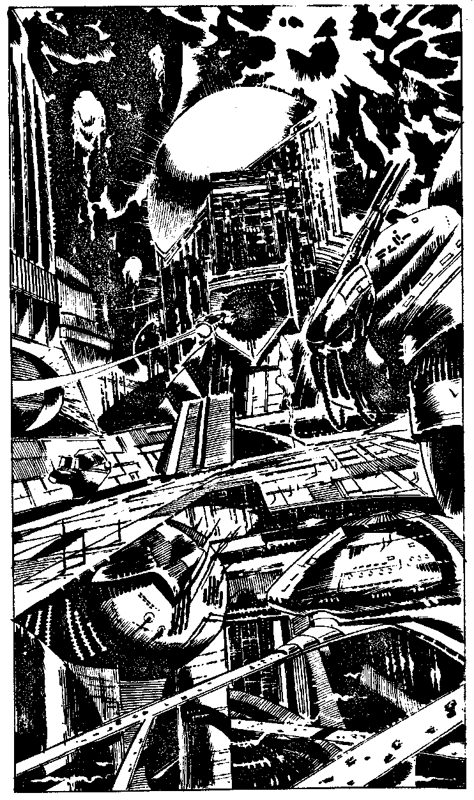

317
As you have just spent an hour of your life in null-space you may restore up to 12 points of lost Endurance points through the use of your Autodoc. You rematerialise on Mechanon at the same instant that you left Thrix in real time, but as your camera surveys the horizon there is no sign of Yelov or his newly manufactured Time Machine. Mechanon is a gleaming orb of polished metals Robo-factories stretch as far as the eye can see, covering every inch of the planet's surface, almost without light in the sombre red of Mechanon's sky. You have landed on the sloping roof of a refinery and a motionless mining droid overshadows Falcon's Wing. At three mile intervals around you are what must be planetary defence points: bronze domes bristling with some sort of surface-to-space artillery. Between two of these bases is the yawning entrance of a building which is clearly more than a factory. As the camera zooms in, a large flying droid disappears into it, trailing a greenish line of vapour. Your scanners indicate that nothing lives on this dead world, not even grass, but it is alive with bizarrely-shaped droids which fly and scuttle across its face like insects. The sky is laced with power-lines which stretch from pylons atop the factories, and on the towering peak of one of these a radar dish is sweeping in a slow arc towards Falcon's Wing. CAIN tells you Mechanon's atmosphere is harmful to human life and you decide to get into your environment suit again. It also used the molecular converter to create a Universal Interface, saying: 'Insert the Interface into any Central Computer Communications access point and it will extract as much information as it can from Mechanon's Central Computer memory banks about the wardroid's plans, Falcon Good luck!' Will you:
| Prepare your Flyer? | Turn to 342 |
| Leap onto the access disc and leave Falcon's Wing immediately? | Turn to 328 |
| Check the functions of your environment suit carefully before stepping onto the access disc? | Turn to 353 |